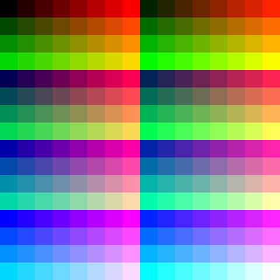

When it comes to converting video to GIF, one usually gets a huge file and a questionable quality. Most of the guides suggest to use FFmpeg to do the conversion, but usually, they don’t bother with the quality of the result. As it turns out, folks from FFmpeg made some huge steps in improving the GIF output.
As you probably know, GIF is limited to a palette of 256 colors. And by default, FFmpeg just uses a generic palette that tries to cover the whole color space in order to support the largest variety of content:

The idea is to generate a custom palette and use it during conversion.
# generate a palette
$ ffmpeg -i input.mov -vf "fps=10,scale=320:-1:flags=lanczos,palettegen palette.png"
# output the GIF using generated palette
$ ffmpeg -i input.mov -i palette.png -filter_complex "fps=10,scale=320:-1:flags=lanczos[x];[x][1:v]paletteuse" output.gifSince I am not good at remembering this kind of commands (and I hate to cycle the history of commands), I’ve created a simple script for doing exactly this. It’s called gifify and you can find it in my .environment repository.
Strong points of this script:
You can pass scaling to
ffmpeg(usually I don’t want to mess with the actual size). Default value is1.You can pass FPS to
ffmpeg. Default value is24.The output file is defined automatically (input filename extension is changed to
gif), but you can specify it manually.Allows using default palette (custom one won’t be generated).
Allows compressing resulting GIF using
gifsicle. By default, result is not compressed.You can pass any additional arguments to
ffmpeg(like time).
My concern usually is about quality, not about the physical size if the output. But you have several options here:
- The lesser FPS is, the lesser output is. In most cases, 15 FPS is good enough.
- Use scaling. When it comes to screen video, you rarely need the original size, scale it a bit.
- In case you are good with the default palette, just use it.
- Use compression provided by
gifsicle.
Palettes: default vs custom
Here are several examples, were the difference between default and custom palette is visible. In the first example, the difference is more obvious than in others, but still.


Installation
First, you need to install dependencies: ffmpeg and gifsicle. On macOS, you can install them using brew.
Then you need to grab the latest version of gifify.
$ curl https://raw.githubusercontent.com/d12frosted/environment/master/utils/bin/gifify > /path/to/gifify
$ chmod +x /path/to/gififyNote that gifify should be in the folder that is visible from your PATH. I usually put gifify in $HOME/.local/bin.
Source code
You can find the latest version on GitHub.
#!/usr/bin/env bash
#
# Convert video to gif
#
# Usage:
#
# gifify -i FILE [OPTIONS]
#
# To the list of all options, use
#
# gifify --help
#
set -e
POSITIONAL=()
SCALE=1
FPS=24
PTS=1
PALETTE="custom"
COMPRESS=0
while [[ $# -gt 0 ]]
do
key="$1"
case $key in
-i|--input)
INPUT="$2"
shift # past argument
shift # past value
;;
-o|--output)
OUTPUT="$2"
shift # past argument
shift # past value
;;
-s|--scale)
SCALE="$2"
shift # past argument
shift # past value
;;
--fps)
FPS="$2"
shift # past argument
shift # past value
;;
--pts)
PTS="$2"
shift # past argument
shift # past value
;;
--default-palette)
PALETTE="default"
shift # past argument
;;
--compress)
COMPRESS=1
shift # past argument
;;
*) # unknown option
POSITIONAL+=("$1") # save it in an array for later
shift # past argument
;;
esac
done
set -- "${POSITIONAL[@]}" # restore positional parameters
function print_usage() {
echo "Usage:
gifify -i FILE [OPTIONS]
-i, --input FILE (required) specify input video file
-o, --output FILE (optional) specify output gif file
defaults to input file with extension changed to gif
-s, --scale INT (optional) specify scale of the resulting gif (affects
both width and height)
affects speed of conversion and physical size of the
resulting gif
defaults to 1
--fps INT (optional) specify FPS of the resulting gif
defaults to 24
--pts INT (optional) specify PTS of the resulting gif
affects speed of the playback
defaults to 1
--default-palette (optional) enforce default palette instead of
specially generated one, may lead to worse quality
--compress (optional) compress the gif to make physical size
lesser, may lead to worse quality
"
}
if [[ -z $INPUT ]]; then
echo "Missing input"
print_usage
exit 1
fi
if [[ ! -f $INPUT ]]; then
echo "'$INPUT' is not a file"
print_usage
exit 1
fi
if [[ -z $OUTPUT ]]; then
OUTPUT="${INPUT%.*}.gif"
fi
if [[ $COMPRESS == "1" ]]; then
OUTPUT_TEMP="tmp_$OUTPUT"
else
OUTPUT_TEMP="$OUTPUT"
fi
PALETTE_FILE="${INPUT%.*}.png"
filters="fps=${FPS},scale=iw*${SCALE}:ih*${SCALE}:flags=lanczos,setpts=${PTS}*PTS"
echo "input = ${INPUT}"
echo "output = ${OUTPUT}"
echo "scale = ${SCALE}"
echo "fps = ${FPS}"
echo "pts = ${PTS}"
echo "palette = ${PALETTE}"
echo "compress = ${COMPRESS}"
echo "args = ${POSITIONAL[*]}"
echo "filters = $filters"
echo
function cleanup () {
rm -f "$PALETTE_FILE"
}
trap cleanup INT TERM EXIT
case $PALETTE in
custom)
# shellcheck disable=SC2086
ffmpeg ${POSITIONAL[*]} \
-i "$INPUT" \
-vf "$filters,palettegen" \
"$PALETTE_FILE"
# shellcheck disable=SC2086
ffmpeg ${POSITIONAL[*]} \
-i "$INPUT" \
-i "$PALETTE_FILE" \
-filter_complex "$filters [x]; [x][1:v] paletteuse" \
"$OUTPUT_TEMP"
;;
default)
# shellcheck disable=SC2086
ffmpeg ${POSITIONAL[*]} \
-i "$INPUT" \
-filter_complex "$filters" \
"$OUTPUT_TEMP"
;;
esac
if [[ $COMPRESS == "1" ]]; then
gifsicle --optimize=3 --delay=3 "$OUTPUT_TEMP" -o "$OUTPUT"
fiMore quality
In this post, I covered only quality improvements from using a custom palette. But actually, there are other ways to tweak you GIF when using FFmpeg. You can find out more in High quality GIF with FFmpeg.